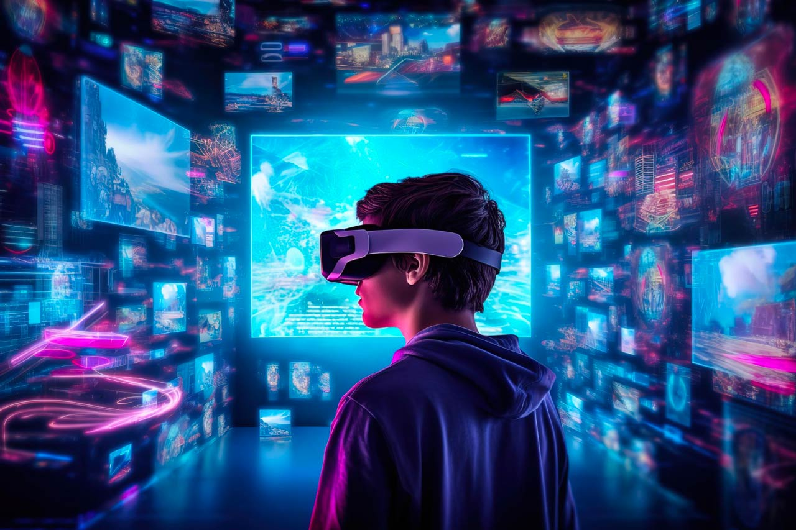

-
Augmented Reality (AR) adalah teknologi yang menggabungkan dunia nyata dengan elemen-elemen digital secara interaktif. Dengan menggunakan perangkat seperti smartphone, tablet...
Augmented Reality (AR) adalah teknologi yang menggabungkan dunia nyata dengan elemen-elemen digital secara interaktif. Dengan menggunakan perangkat seperti smartphone, tablet, atau kacamata khusus, pengguna dapat melihat lingkungan fisik mereka yang diperluas dengan tambahan informasi visual, suara, atau bahkan interaksi 3D. Teknologi ini memanfaatkan sensor dan kamera pada perangkat untuk mengidentifikasi objek di sekitarnya dan menempatkan objek digital, seperti gambar, video, atau model 3D, ke dalam tampilan realitas yang ada. Contohnya, dalam aplikasi AR, Anda bisa melihat model 3D dari produk yang ingin dibeli di toko online dan memposisikannya di ruang nyata Anda untuk melihat seberapa baik objek itu cocok atau terlihat.
Teknologi ini juga digunakan dalam industri pendidikan untuk menciptakan pengalaman belajar yang interaktif, dalam perawatan kesehatan untuk simulasi prosedur medis, dan dalam permainan untuk menciptakan pengalaman bermain yang imersif. Dengan kemajuan sensor dan kecerdasan buatan, AR terus berkembang menjadi alat yang kuat untuk meningkatkan cara kita berinteraksi dengan dunia di sekitar kita, membuka peluang baru dalam berbagai industri dan pengalaman pengguna.
Baca lebih lanjut